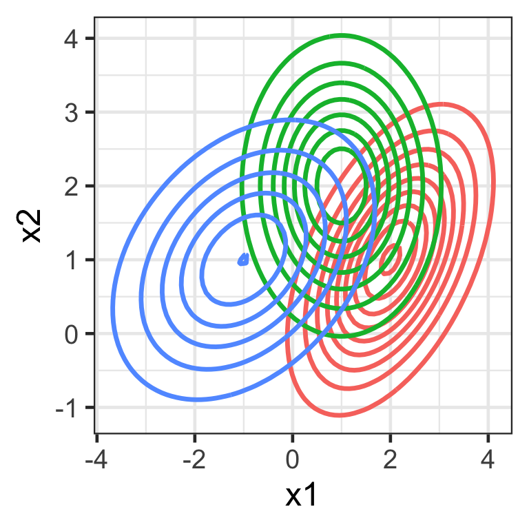

ETC3250/5250
Introduction to Machine Learning
Discriminant analysis
Lecturer: Emi Tanaka
Department of Econometrics and Business Statistics
Discriminant analysis
- Another approach for building a classification model is with discriminant analysis (DA).
- There are two main approaches we cover in this unit:
- linear discriminant analysis (LDA), and
- quadratic discriminant analysis (QDA).
Logistic regression vs LDA vs QDA
- For DA, we estimate P(X|Y) shown as the contours to deduce P(Y|X) used to get the decision boundary.
DA in a nutshell
- DA involves assuming that the distribution of the predictors has a multivariate Normal distribution:
- \boldsymbol{X}_{k} \sim N(\boldsymbol{\mu}_{k}, \mathbf{\Sigma}_k) for class k = 1, \dots, K where
- \boldsymbol{\mu}_{k} is the p-vector of means, and
- \mathbf{\Sigma}_k is the p\times p variance-covariance matrix for the j-th predictor.
- \boldsymbol{X}_{k} \sim N(\boldsymbol{\mu}_{k}, \mathbf{\Sigma}_k) for class k = 1, \dots, K where
- DA provides a low-dimensional projection of the p-dimensional space, where the class means \boldsymbol{\mu}_{k} are the most separated relative to the variance-covariance \mathbf{\Sigma}_k.
Background
Bayes theorem
- Let f_k(x) be the density function for predictor x for class k.
- Bayes theorem (for K classes) states that the posterior probability: P(Y = k|X = x) = p_k(x) = \frac{\pi_kf_k(x)}{\sum_{k=1}^K \pi_kf_k(x)} where \pi_k = P(Y = k) is the prior probability that the observation comes from class k.
Univariate Normal (Gaussian) distribution
f(x) = \frac{1}{\sqrt{2 \pi} \sigma} \text{exp}~ \left( - \frac{1}{2 \sigma^2} (x - \mu)^2 \right).
Code
tibble(x = seq(-5, 7, length = 100)) %>%
mutate(f1 = dnorm(x, 2, 1),
f2 = dnorm(x, -1, 1),
f3 = dnorm(x, 3, 2)) %>%
pivot_longer(f1:f3, values_to = "f") %>%
ggplot(aes(x, f)) +
geom_line(aes(color = name), linewidth = 1.2) +
labs(y = "f(x)", color = "") +
scale_color_discrete(labels = c("N(2, 1)", "N(-1, 1)", "N(3, 4)"))Multivariate Normal (Gaussian) distribution
f(\boldsymbol{x}) = \frac{1}{(2\pi)^{\frac{p}{2}}|\mathbf{\Sigma}|^{\frac{1}{2}}} \exp\left(-\frac{1}{2}(\boldsymbol{x}-\boldsymbol{\mu})^\top\mathbf{\Sigma}^{-1}(\boldsymbol{x}-\boldsymbol{\mu})\right)
- \boldsymbol{\mu} is a p-vector of means, and
- \mathbf{\Sigma} is a p\times p variance-covariance matrix.
Code
expand_grid(x1 = seq(-5, 5, length = 100),
x2 = seq(-5, 5, length = 100)) %>%
rowwise() %>%
mutate(f1 = mvtnorm::dmvnorm(c(x1, x2), mean = c(2, 1), sigma = matrix(c(1, 0.5, 0.5, 1), 2, 2)),
f2 = mvtnorm::dmvnorm(c(x1, x2), mean = c(1, 2), sigma = matrix(c(1, 0, 0, 1), 2, 2)),,
f3 = mvtnorm::dmvnorm(c(x1, x2), mean = c(-1, 1), sigma = matrix(c(2, 0.5, 0.5, 1), 2, 2)),) %>%
pivot_longer(f1:f3, values_to = "f") %>%
ggplot(aes(x1, x2, z = f)) +
geom_contour(aes(color = name), linewidth = 1.2) +
labs(color = "") +
guides(color = "none")
Linear Discriminant Analysis
LDA
Recall, we assume that \boldsymbol{X}_{k} \sim N(\boldsymbol{\mu}_{k}, \mathbf{\Sigma}_k) for k = 1, \dots, K.
In LDA, we further assume that \mathbf{\Sigma}_1 = \mathbf{\Sigma}_2 = \dots = \mathbf{\Sigma}_k = \mathbf{\Sigma}.
Then by Bayes theorem, the posterior is given as: p_k(\boldsymbol{x}) = \frac{\pi_k\exp~ \left( - \frac{1}{2} (\boldsymbol{x} - \boldsymbol{\mu}_k)\mathbf{\Sigma}^{-1}(\boldsymbol{x} - \boldsymbol{\mu}_k) \right) }{ \sum_{k = 1}^K \pi_k \exp~ \left( - \frac{1}{2} (\boldsymbol{x} - \boldsymbol{\mu}_k)\mathbf{\Sigma}^{-1}(\boldsymbol{x} - \boldsymbol{\mu}_k) \right) }.
We assign new observation \boldsymbol{X} = \boldsymbol{x}_0 to the class with the highest p_k(\boldsymbol{x}_0), referred to as the maximum a posteriori estimation (MAP).
LDA with R: \boldsymbol{\mu}_k
- The LDA model can be fit using
lda()via the maximum likelihood estimate in theMASSpackage as:
- The estimate of \begin{bmatrix}\boldsymbol{\mu}_{\text{A}}^\top\\ \boldsymbol{\mu}_{\text{B}}^\top \end{bmatrix} is found:
LDA with R: \mathbf{\Sigma}
- The estimate of \mathbf{\Sigma} is found:
cancer_lda_sigma <- cancer_train %>%
# first center predictors based on MLE of class means
mutate(x1 = radius_mean - cancer_lda$means[diagnosis, "radius_mean"],
x2 = concave_points_mean - cancer_lda$means[diagnosis, "concave_points_mean"]) %>%
select(x1, x2) %>%
# find the sample variance-covariance matrix
var()
cancer_lda_sigma x1 x2
x1 5.39571618 0.0348868055
x2 0.03488681 0.0005928822Quadratic Discriminant Analysis
QDA with R: \boldsymbol{\mu}_k
- The QDA model can be fit using
qda()via the maximum likelihood estimate in theMASSpackage as:
- The estimate of \begin{bmatrix}\boldsymbol{\mu}_{\text{A}}^\top\\ \boldsymbol{\mu}_{\text{B}}^\top \end{bmatrix} is found:
QDA with R: \mathbf{\Sigma}
- The estimate of \mathbf{\Sigma} is found:
cancer_qda_sigma <- cancer_train %>%
# first center predictors based on MLE of class means
mutate(x1 = radius_mean - cancer_qda$means[diagnosis, "radius_mean"],
x2 = concave_points_mean - cancer_qda$means[diagnosis, "concave_points_mean"]) %>%
group_by(diagnosis) %>%
summarise(sigma = list(var(data.frame(x1, x2))))
cancer_qda_sigma$sigma[[1]] x1 x2
x1 9.91949800 0.076928052
x2 0.07692805 0.001252928 x1 x2
x1 2.93888569 0.011998849
x2 0.01199885 0.000233707Predictions from dicriminant models
library(MASS)
qthresh <- 0.5
cancer_pred <- cancer_test %>%
mutate(prob_lda = predict(cancer_lda, .)$posterior[, 1],
prob_qda = predict(cancer_qda, .)$posterior[, 1],
pred_lda = factor(ifelse(prob_lda > qthresh, "M", "B"), levels = c("M", "B")),
pred_qda = factor(ifelse(prob_qda > qthresh, "M", "B"), levels = c("M", "B"))) %>%
select(prob_lda, prob_qda, pred_lda, pred_qda, diagnosis)
cancer_pred# A tibble: 142 × 5
prob_lda prob_qda pred_lda pred_qda diagnosis
<dbl> <dbl> <fct> <fct> <fct>
1 0.730 1.00 M M M
2 0.446 0.981 B M M
3 0.257 0.471 B B M
4 0.733 0.999 M M M
5 0.149 0.340 B B M
6 0.997 1.00 M M M
7 0.608 0.977 M M M
8 0.257 0.357 B B M
9 0.115 0.155 B B B
10 0.993 1.00 M M M
# … with 132 more rowsClassification metrics
library(yardstick)
cancer_pred %>%
pivot_longer(-diagnosis, names_to = c(".value", "model"), names_sep = "_") %>%
group_by(model) %>%
metric_set(sensitivity, specificity, precision, recall, pr_auc, roc_auc,
f_meas, accuracy, bal_accuracy, kap, mcc, ppv, npv, j_index)(.,
truth = diagnosis,
prob,
estimate = pred) %>%
pivot_wider(.metric, names_from = model, values_from = .estimate) %>%
mutate(winner = ifelse(lda > qda, "lda", "qda"))# A tibble: 14 × 4
.metric lda qda winner
<chr> <dbl> <dbl> <chr>
1 sensitivity 0.738 0.852 qda
2 specificity 0.988 0.914 lda
3 precision 0.978 0.881 lda
4 recall 0.738 0.852 qda
5 f_meas 0.841 0.867 qda
6 accuracy 0.880 0.887 qda
7 bal_accuracy 0.863 0.883 qda
8 kap 0.748 0.769 qda
9 mcc 0.767 0.769 qda
10 ppv 0.978 0.881 lda
11 npv 0.833 0.892 qda
12 j_index 0.725 0.766 qda
13 pr_auc 0.969 0.958 lda
14 roc_auc 0.977 0.967 lda Takeaways
Logistic regression
- Goal: directly estimate P(Y \lvert X)
- Assumptions: no assumptions on predictor space
Discriminant analysis
- Goal: estimate P(X \lvert Y) to then deduce P(Y \lvert X)
- Assumptions: predictors are normally distributed

ETC3250/5250 Week 4B